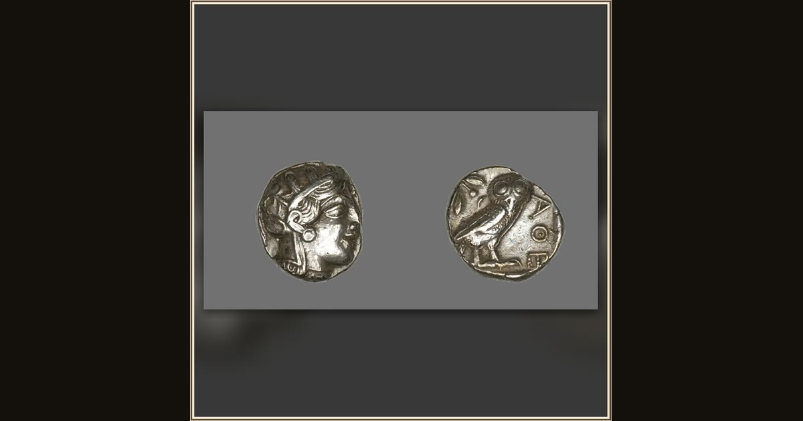

Tetradrachm (Coin) Depicting the Goddess Athena
Greek, minted in Athens · about 490 BCE · The Art Institute of Chicago · Chicago, USA
Athena works through shifting forms in these opening books — first arriving herself as the old family friend Mentes, then as Mentor at young Telemachus’s side, and later sending Penelope a dream-phantom in the likeness of her sister Iphthime. The guardian godd